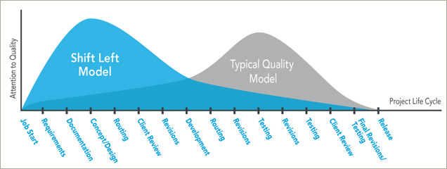

Shift left
test your system as you design it
This is NOT about:
looking back
monologue
selling futuristic ideas
enforcing "new" practices
“This delay is particularly disturbing because from 45 percent to 65 percent of defects are introduced in the requirements, architecture, and design activities.”~ Wikipedia
SDLC
If your SDLC looks like this:

You are doing it wrong!
Something to consider
- Software is not delivered on time?
- Software development costs are high?
- Software quality does not meet standards?
- Testing is not proper, leading to business losses?
- Used software development approaches are becoming ineffective to curb the expectations?
Quality assurance

The Basics
- Testing begins, NOT when something becomes testable, but instead at the moment there exists something that needs testing!
- Early testing Ultimately improves faster time to market
- Test reports should NOT look like this:

Manual & Exploratory testing
- Is not ad-hoc activity!
- Requires plannig
- Requires scheduling
- Requires execution
- Requires reporting
- Requires analysis
- Requires skill
Automation testing
- Is development activity!
- Is integrated development effort
- Is something you can’t ‘bolt on’ into a system
Shift left
Model testing moves testing to the left side of the Vs (V-model) by testing executable requirements, architecture, and design models. This shift enables testing to begin almost immediately, instead of waiting a long time (traditional), medium time (incremental), or a short time (Agile/DevOps) until software on the right side of the Vs is available to test.

Is 'Shift Left' A New Idea?
In the 1950's, programmers knew that it was better to start testing earlier

Benefits:
- Bugs are found and fixed early
- Saving time and resources
- Allowing good test coverage
- Better team work with developers and testers – this model minimizes frictional differences between them
- Delivery of software is expedited
- Cost effectiveness
Main concept
How to get started?
- Here's where to start. Pick one small team/project, and have a tester work with them on a feature from the very beginning.
- DEMAND QUALITY and tests as definition of done.
- No need to wait for the next project, do it next sprint.
“But as it recently occurred to me: we're all testers now.”~ Beyond QA - HP Enterprise
What to expect from now on?
- Plan and create test cases in advance
- Support a periodic cycle of integration testing for the components/applications under change
- Prioritize, process, and resolve feedback by development teams within the feedback loop
- Whatever testing you can perform shifts left
- What to expect from now on (2)
- Gather details about testing priorities and focus
- Identify types of tests to be performed
- Prepare Requirement Traceability Matrix (RTM)
- Identify test environment details where testing is supposed to be carried out
- Automation feasibility analysis (if required)
Now, remember again the SDLC from the begging of this presentation!

Considerations
Overall
- Identify feedback velocity and means to measure it
- Scope of automation pipeline (build, deploy, test)
- Decide which changes will improve team’s success (versus introduce functionality)
- Continuously improve and plan for next steps (they will be needed)
“The older model will, over time, make way for the newer model. This will be a case Darwinian natural selection played out in the matter of only a few short years. The fittest will survive with the timeframe determined by economics and quality of execution.”~ J.A. Whittaker - Exlporatory software testing, 2009